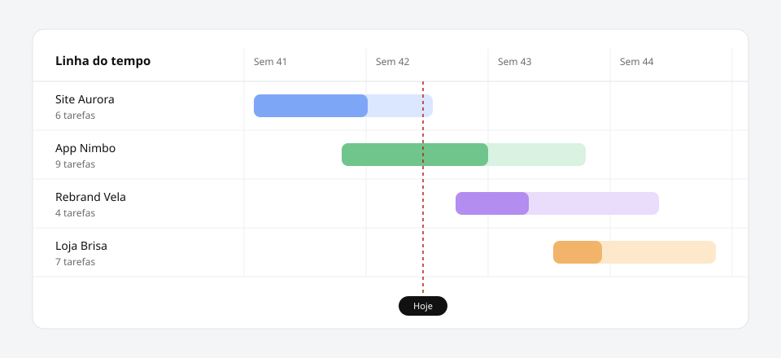

08 out 2026 Atalhos de teclado v2.4.0 Novidades: Paleta de comandos com Ctrl+K ou Cmd+K Atalho N para criar uma tarefa de qualquer tela Correções: Lembretes de prazo respeitam o fuso horário da conta
22 set 2026 Linha do tempo v2.3.0  Todos os projetos e prazos em uma só tela. Novidades: Linha do tempo com visão por semana e por mês Marcador de hoje para localizar prazos próximos Melhorias: Painel de tarefas abre até 40% mais rápido Filtros do painel lembrados entre sessões
09 set 2026 Cobranças recorrentes v2.2.0 Novidades: Cobranças mensais, trimestrais e anuais Envio automático da fatura ao cliente Melhorias: Faturas em PDF com o logotipo e as cores do negócio Correções: Valores com centavos não são mais arredondados no CSV
25 ago 2026 Teclado e leitores de tela v2.1.0 Novidades: Modo de alto contraste nas configurações de aparência Melhorias: Foco visível em todos os links, botões e campos Formulários com rótulos e erros anunciados por leitores de tela